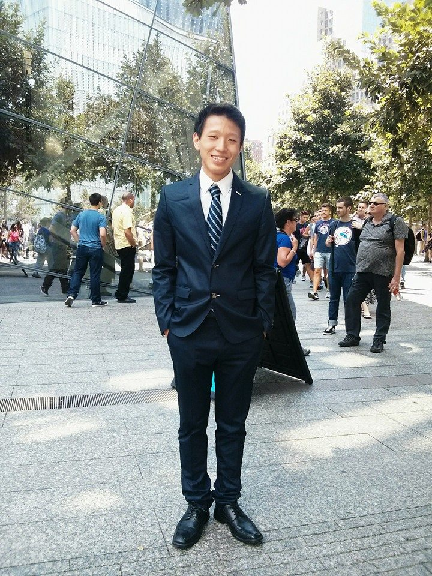

|

|
Name: Junwoo.S Email: shin.junwoo97@gmail.com Phone Number: 200-000-000 Rating |
Hello, my name is Harry Potter and I am a student at Hogwarts School of Witchcraft and Wizardry. I am on the Quidditch team as the Seeker and have been one since first joining the team. I excel in all my classes and my teachers can testify to this. I enjoy reading books in my spare time and trying out new spells.
Proctored a class of 8th grade wizards as a teacher assistant. Handed out test booklets and responded to the needs of students. Assisted with grading tests and making score reports on Microsoft Excel.
Worked at Haggard's shed for a week, three hours a day stocking the potion shelf. Responsibilities included keeping bottles organized, taking inventory, and replacing shattered bottles.
Repairing damaged brooms and sorting quidditch balls for upcoming games. Worked as a team assistant in recording match scores and results. Assisting the team for the upcoming season by surveying players on needed equipment.